01 / APPLE PLATFORMS
Native, from phone to watch.
Swift, SwiftUI, UIKit, HealthKit, CoreMotion, and WatchConnectivity across iOS, iPadOS, and watchOS.
From the first idea to a product people use.
I design, build, and ship mobile applications across iOS, iPadOS, watchOS, Flutter, and React Native. My strongest work combines deep native Apple engineering with ownership of the complete product lifecycle.

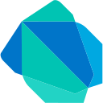
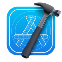
Complete marketplaces, connected healthcare, event operations, and media experiences. Explore the product and the engineering behind it.
Automotive marketplace connecting vehicle buyers, private sellers, and dealerships.
Australian construction marketplace for discovering and exchanging construction materials.
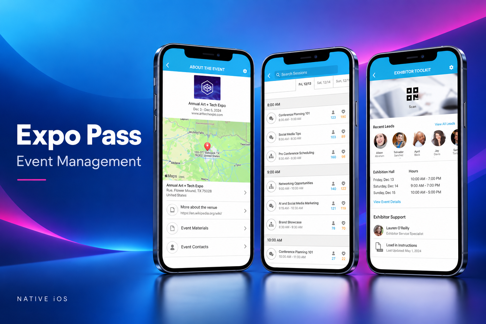
Event-management platform combining offline operations, payments, and hardware integrations.
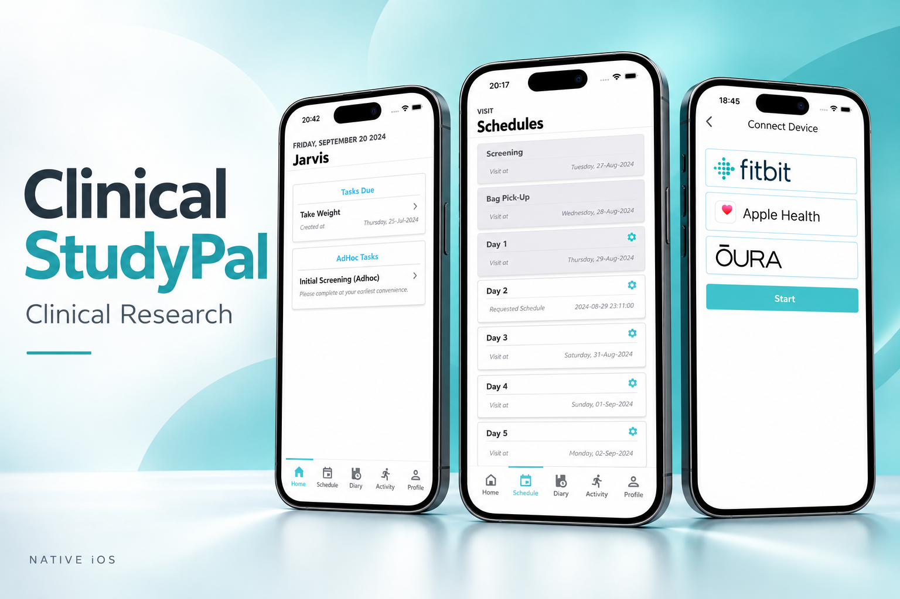
Clinical research ecosystem connecting iPhone, Apple Watch, wearable sensors, and health data.
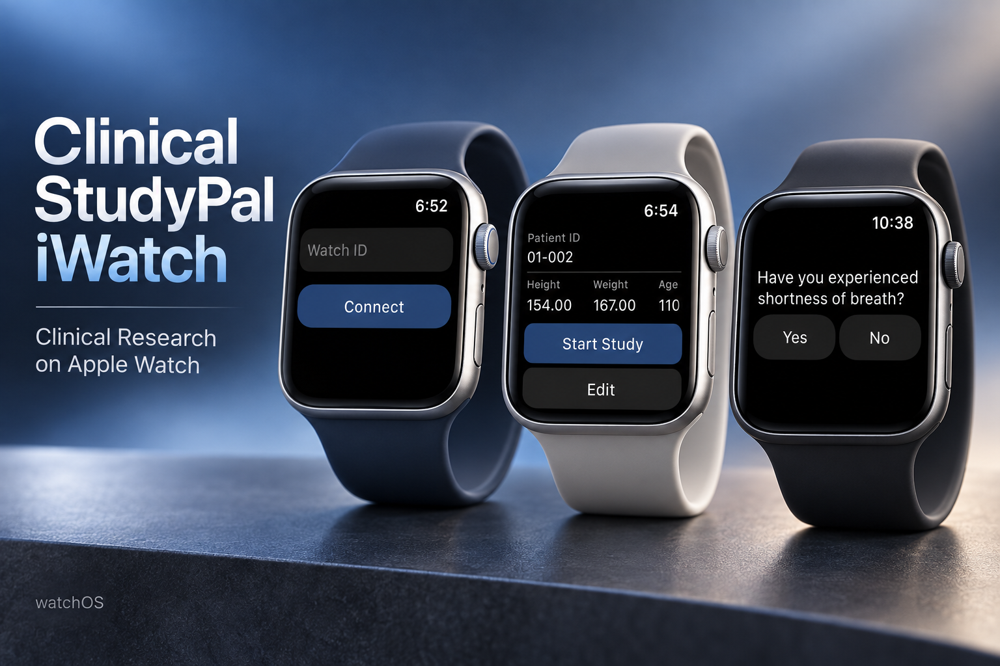
Apple Watch companion for clinical research, study participation, and connected health workflows.
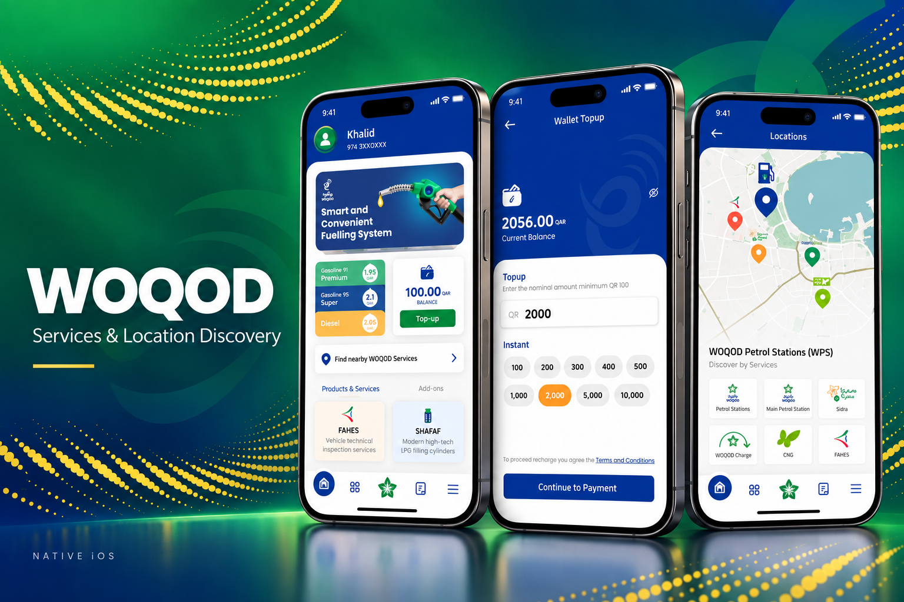
Native iOS services application with service discovery and location-based experiences.
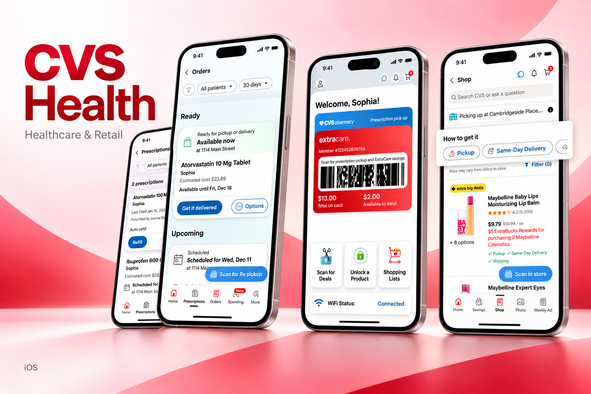
Healthcare application supporting prescription management, rewards, and shopping workflows.

Mobile ordering application with rewards, order customization, and delivery experiences.
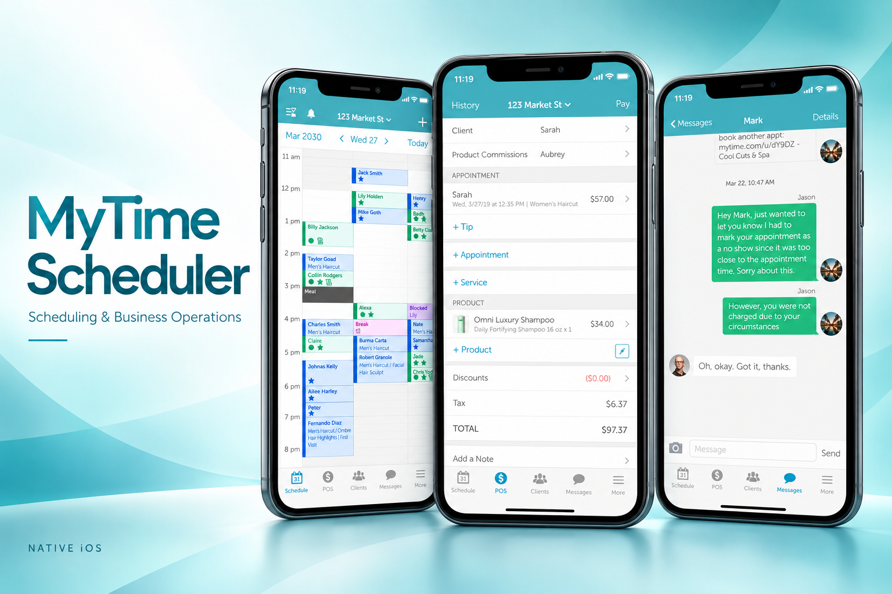
Business scheduling application with appointments, point-of-sale, and client communication.
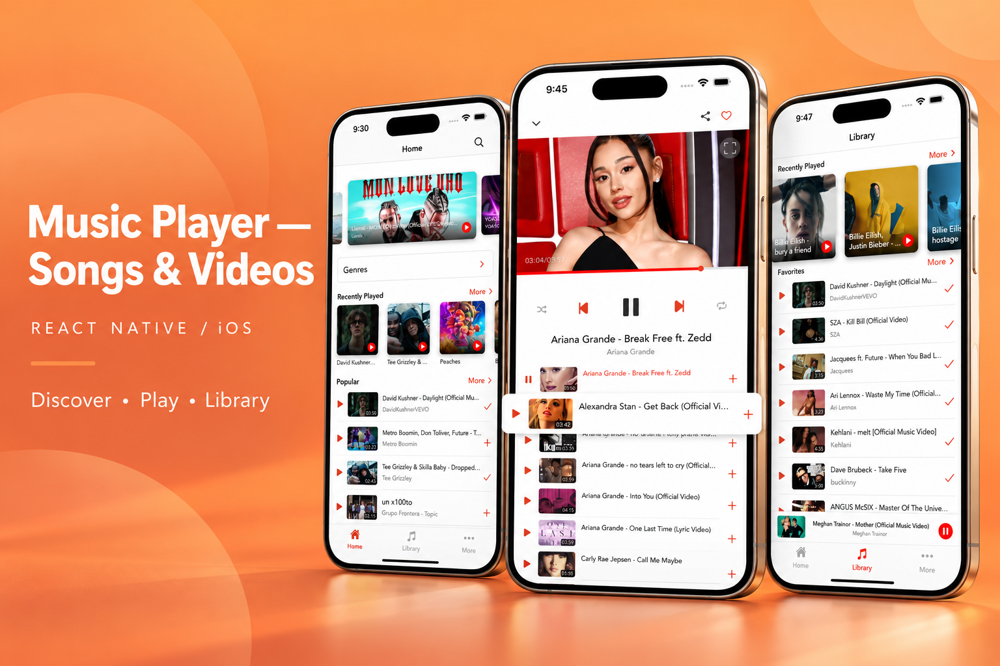
Music and video application with discovery, playback, and a personal media library.
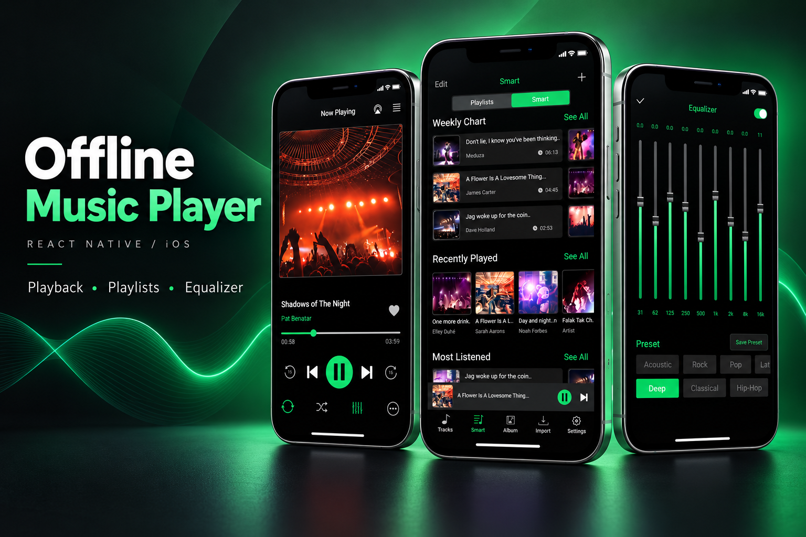
Music application with offline listening, smart playlists, and audio equalizer controls.
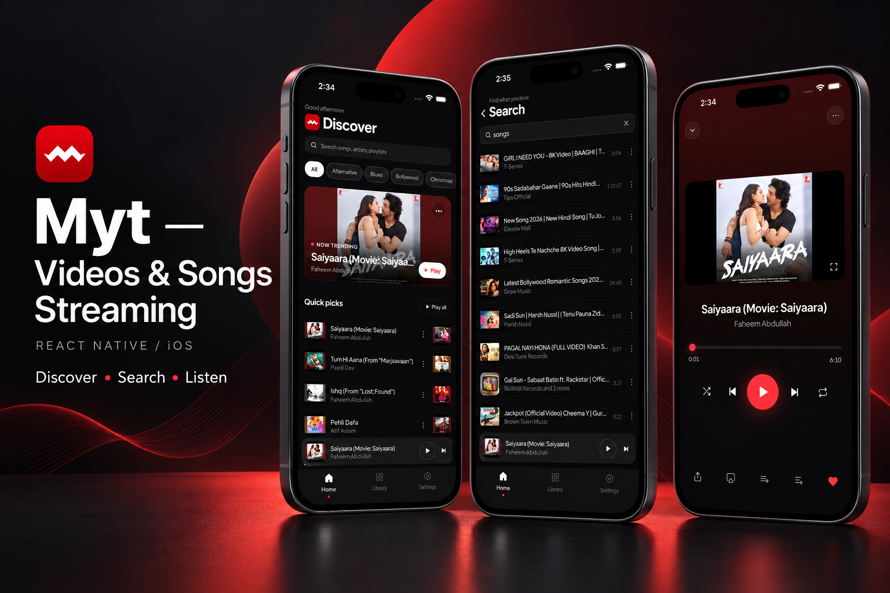
Music and video streaming application with discovery, search, and playback.
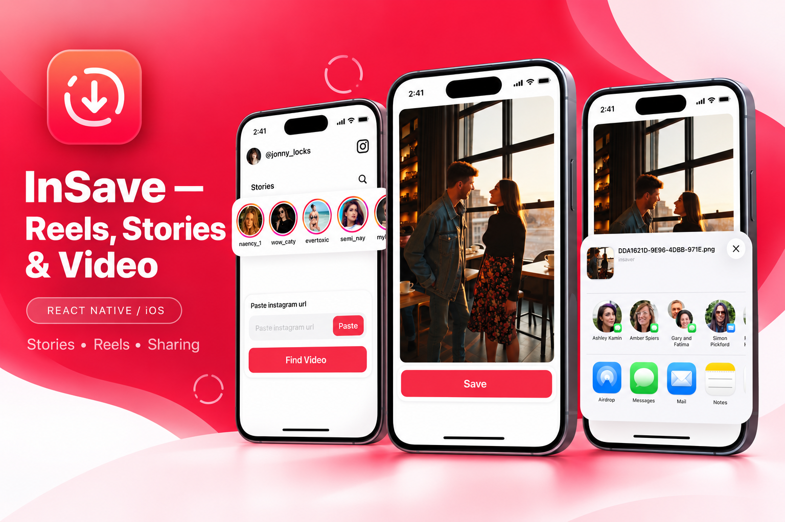
Media utility for finding, saving, and sharing stories, reels, and videos.
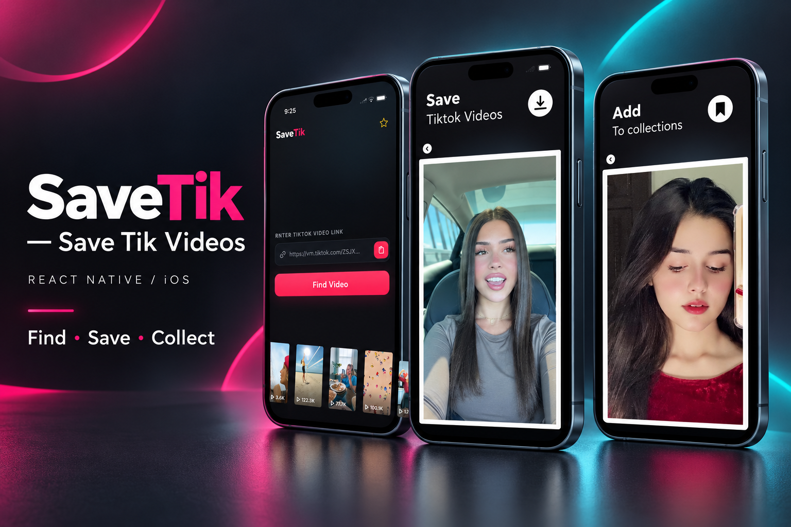
Video utility for finding videos, saving media, and organizing collections.
My strongest specialization is native Apple development. I also deliver complete Flutter and React Native products, working with founders and teams across architecture, backend integration, QA, release, and production.
Swift, SwiftUI, UIKit, HealthKit, CoreMotion, and WatchConnectivity across iOS, iPadOS, and watchOS.
Flutter and React Native applications with clear architecture, API integrations, and coordinated store releases.
Local persistence, background synchronization, conflict handling, retry queues, and server reconciliation.
Stripe, Stripe Terminal, Apple Pay, StoreKit, and RevenueCat across payments and monetization workflows.
ARKit and LiDAR measurement workflows, interactive overlays, and camera-space coordinate handling.
XCTest, XCUITest, Crashlytics, Sentry, structured logging, CI/CD, and production stabilization.
Working directly with founders and product teams on complete mobile products, architecture, backend coordination, code reviews, QA, and production delivery.
Continued mobile engineering contract work across production applications and product delivery.
Led complex mobile initiatives, modernized legacy applications, implemented payments and synchronization, mentored developers, and managed production releases.
Built iPhone and Apple Watch healthcare experiences with HealthKit, wearable sensor data, background synchronization, local persistence, and testing.
Master’s in Software Engineering · Bachelor of Computer Science.
National University of Computer and Emerging Sciences.
Translate the product idea into requirements, user workflows, and a practical engineering plan.
Design modular systems, data flows, and integrations that can evolve with the product.
Implement, review, and test the mobile experience alongside backend, design, and QA teams.
Coordinate store releases, monitor production, and stabilize the experience after launch.
For complete product development, senior mobile engineering, architecture, and technical leadership opportunities.